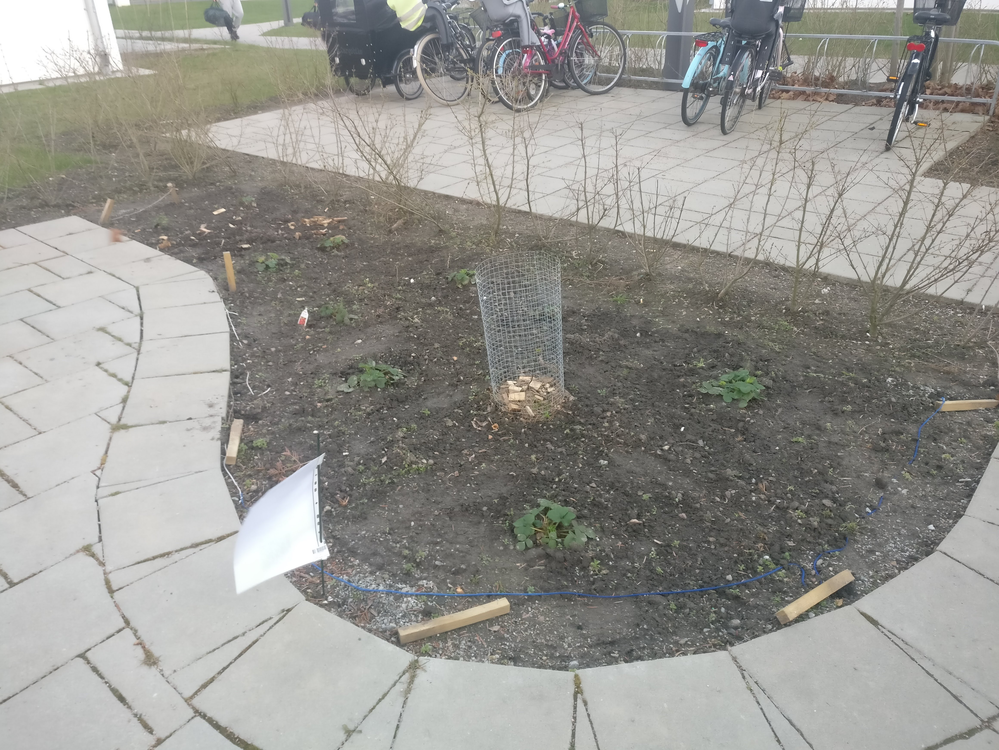
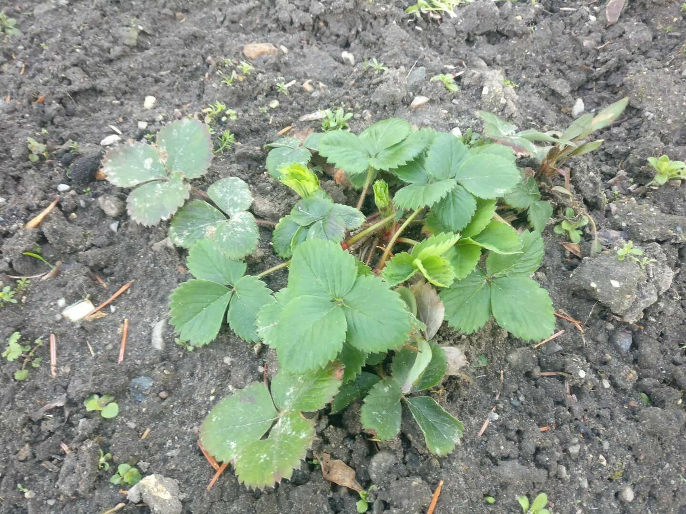
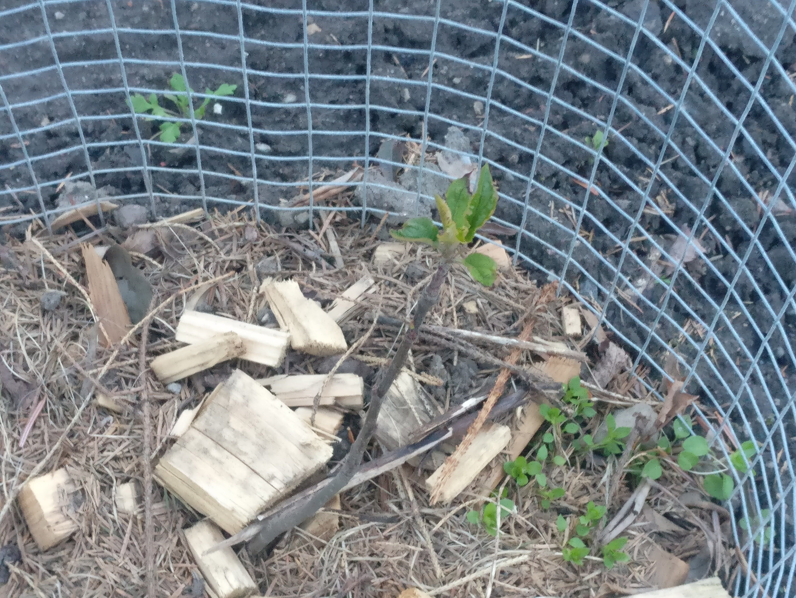
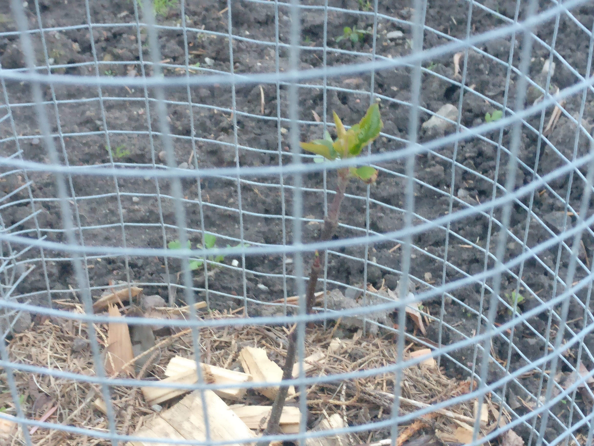
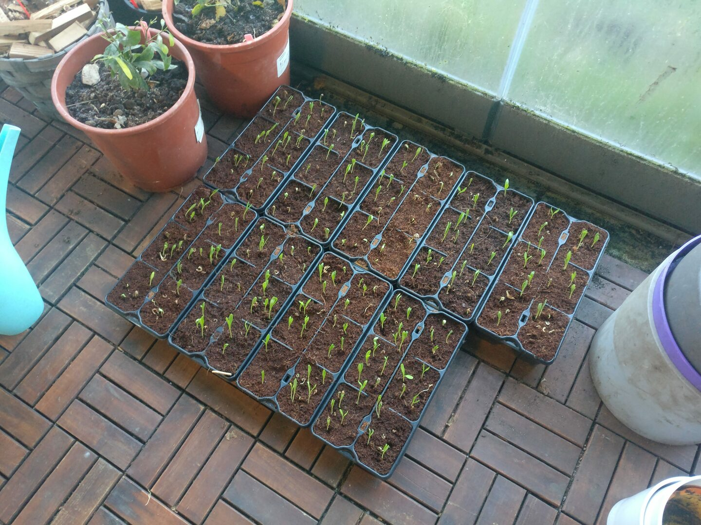
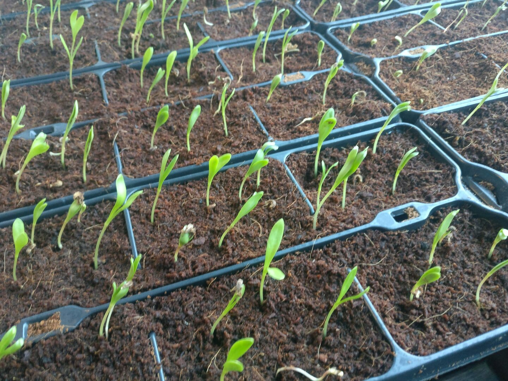

Summary
Next to where we live, in our tiny cluster of apartment buildings, is this very small piece of land that the land lord (MKB) has designated for tennants to grow whatever they want
You can see the lot here. As you can see, it does get some sun, but most of it is hidden in the shadow of the building to the south. Regardless, it should be getting enough sun for the planned plants.
My plan is to try and grow some native edible plants for anyone to pickup and eat
I also plan to try and implement some permaculture techniques to keep the garden going with minimal effort
2021-04-12
This is the piece of land

The lot
You can see at the bottom right there a laminated piece of paper I've set up that explains what im trying to do in Swedish & English, and has a QR code that points to here
The reason for this is that even though this is supposed to be the spot where (the tennants) grow things, the company that maintains the lawns around the buildings has come through before and removed / killed all flowers we've planted "because they thought they were weeds". No Comment. :|
As you can see from the image above, we have 10 strawberry plants. They have been moved there from our "greenhouse" style balcony on week 12 of this year (2021). They have endured a very harsh winter this year without too much sign of stress, so I have good hopes for them enduring the swedish winters fine.

a closeup of one of the strawberry plants
There is also a small apple tree sapling that we germinated from seed last year (2020), around week 24. There was another apple tree there, but it was not as hardy, and did not survive the harsh winter we got this year.
This one, however, seems to have endured and is just now waking up again
The small fence is to keep away tiny rodents from eating it over winter

the apple tree sapling. It currently sits at about 50cm tall

a closeup showing that it is indeed waking up
In the near future, the plan is to suppliment the lot with some Ringblommor (Swedish for Calendula Offcinalis, or Scottish Marigolds) kindly donated to us by two of our friends (If you're reading this, thanks Juffy & Seb :).
My daughters & I have planted them in germinating pots a week ago, and they are in the balcony right now getting ready for transplantion (maybe in a week).

the marigolds germinating in the balcony

closeup of the marigolds